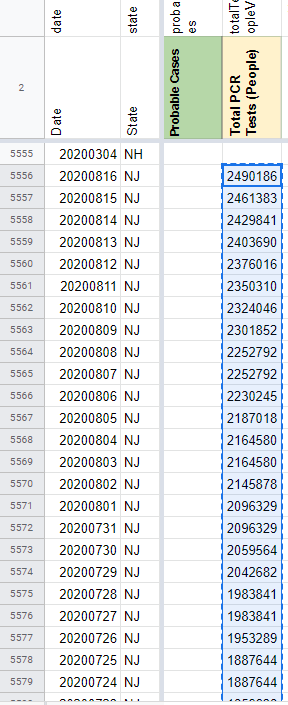
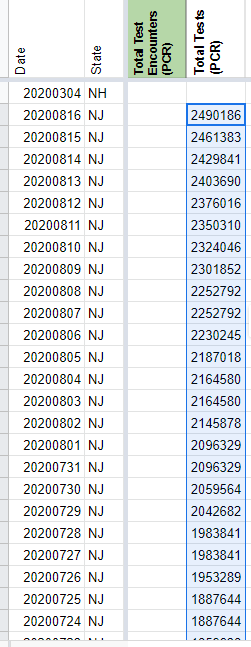
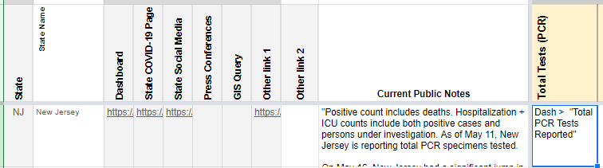

[NJ] SVP Fixes: Move "Total Tests PCR (People)" to "Total Tests (PCR)" from 5/11-8/16
State or US: NJ
Describe the problem ON 5/11, NJ switched the units it reports total tests in from people to tests, but CTP continued to capture the tests in the “peoplewise” column. Any values captured starting 5/11 should be moved from the “Total Tests PCR (People)” column to “Total Tests (PCR)” column
Link to data source NJ Before: (reporting in people) https://covidtracking.com/screenshots/NJ/NJ-20200508-181426.png NJ After: (reporting in tests) https://covidtracking.com/screenshots/NJ/NJ-20200511-001724.png
{kind=link}
{kind=link}
muamichali added the label Data quality on August 14, 2020 at 8:09 am
muamichali closed the issue on August 17, 2020 at 6:50 am
the-daniel-lin commented on August 17, 2020 at 7:41 am
DC’d by DZL 8/17 10:41
Updating Data Store
I am copying the following values from “Total Tests PCR (People)” column to “Total Tests (PCR)” The screenshots reflect the top of the update portion BEFORE  AFTER 
Updating Future Capture Instructions

APPENDIX: Values from 5/11-8/16 2490186 2461383 2429841 2403690 2376016 2350310 2324046 2301852 2252792 2252792 2230245 2187018 2164580 2164580 2145878 2096329 2096329 2059564 2042682 1983841 1983841 1953289 1887644 1887644 1859638 1840929 1817955 1802874 1791137 1781450 1768928 1759904 1742347 1721231 1700385 1685604 1661284 1623158 1599417 1577848 1560133 1549209 1534640 1508548 1485501 1463913 1442937 1422374 1403984 1387833 1367250 1346672 1320910 1299645 1283451 1267399 1244967 1218873 1194343 1171734 1147841 1131782 1116083 1097616 1078215 1055396 1030793 1008934 989497 975089 960425 943016 918891 857729 837420 817677 795600 745308 745308 716411 685857 660325 635892 623797 603807 578735 555314 544274 531343 520182 505569 487565 475224 462972 451696 441450 433060 425933